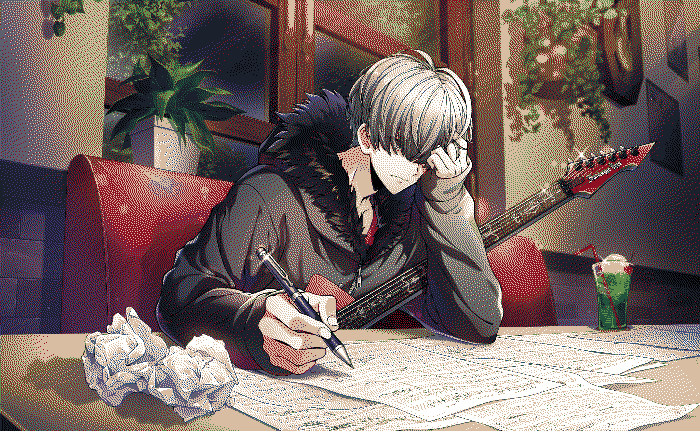
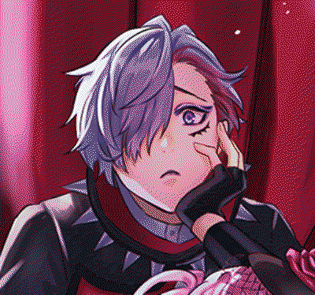
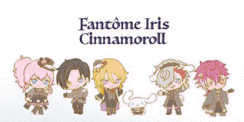
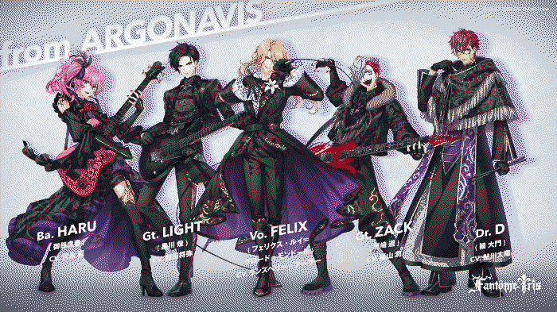
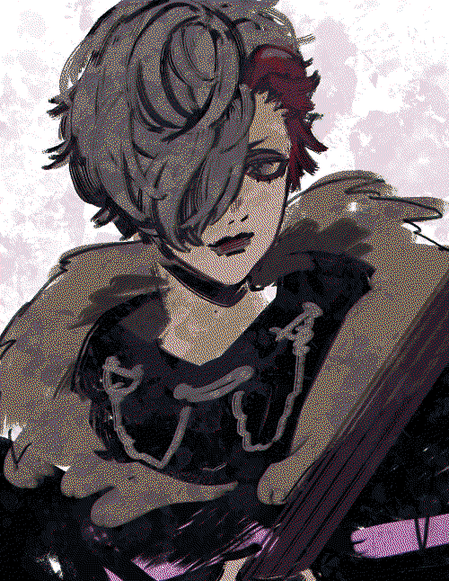

Jun Suzaki is the lead guitarist of Fantome Iris, a fictional and technically real world band from the argonavis project. He was featured in the mobile game, AASIDE which ran for a year from 2021 before ending service in 2022. Read more about the project on the argobdp miraheze!
Jun is an incredibly unlucky man. On top of being generally frail, he's constantly running into trouble-- a trip to the store for Jun would include missing the bus, tripping onto wet paint while subsequently walking there, getting hit in the face by a ball thrown by some kids across the road and then finding out the last of the item he wanted to buy sold out just ten minutes before he arrived, on a good day. Despite this, he tends to look on the good side of things (i.e., "I lost my wallet... but it only had a dollar in it!") D
To put it simply, he's a NEET. He earns money through gaming tournaments, and occasionally helps out Daimon (Faniris's drummer, who runs a cafe on the first floor of the sharehouse they all stay in currently in the story) although that only covers the funds of his pet hedgehog, Johnny's, expenses.
He's the composer for Fantome Iris, with Felix (Faniris's vocals, and director of the band's aesthetics and story) often asking him of complicated requests because he has full faith in him.
On stage and for the band, Jun takes on the persona "ZACK"-- a foul mouthed, and highly energetic character. Once he starts getting into character, he has trouble stopping and often spews long lines of profanities without a filter.

You can find a short introduction video to him here!
wow!!! i am SO fond of this guy. he's such a fun character to me, i just adore his design and his personality soooo much. he was the type of character i saw and loved immediately because of design... i was so excited for aaside to release just because i wanted to know more about him!!!! aaside was such a fun game... great music, great characters, great art and REALLY good 3dmvs in my personal opinion. i know they didn't have the hugest budget ever, but i feel like they really captured the energy of a band performing live and i liked it a lot! s
by the way, did you know argopro is coming out with a new mobile game this year (2023 as of writing this)? it's called kimisute and i am praying so hard that they find a way to bring back the 3dmvs even though they've confirmed it won't be a rhythm game... i miss aaside :( it was so charming...
anyways, enough rambling about aaside, i just think jun is so cool. he's really polite, but he's also sooooooooooo pretty in his stage costumes. i feel like he was a bit of a comedic relief character most of the time in the aaside story content, but he's just so sweet that i can't help but adore him T__T. also, he has a pet hedgehog named johnny who has the same red highlights in his hair (fur? quills?) as jun... it's so charming!!! i
he's a character that i want to draw a lot more because his design appeals so much to me in particular and i feel a want to give him the 'drawing a character so much they basically become your oc' treatment (just like jyushi lol) but my god is he so hard to draw...
i think he has a really cute face, and i hope we get to see more illustrations of his face peeking out from his bangs when the new game comes out... that would be really cute. maybe i should add a little card collection section here when it comes out! C
i'm not really good at describing why i like things, i'm sorry T__T. but just know i'm so so fond of him!! i've started making his cosplay because i want to wear it for the anime convention in my city this year ... i'm soooo so excited for ittttt sobs... i'll probably put together a small ita bag for it too because i ordered a few badges and other merch secondhand huhuhuhu. thank you so much if you read through this silly ramble!!! have the cinnamoroll sillies as a treat :D s
KIMISUTE VISUALS RELEASED!!!!!!!!!!! AHHHHHH!!!!!!!!!!!!!
everyone looks so good... i especially love haru's design!!! i think zack's is very very cool but i'm not a huge fan of the fur sorry king l i did doodle him though c:

gawrsh... i am so so excited T__T everything about the new game sounds so good!!! i especially love the concept of getting to hear demos of songs as you work with your band of choice... i think there was something very charming about aaside's heavy contrast art style but the kimisute art has been so gorgeous so far i am auuuargghhuhhh i want to see everyone's initials... also they time skipped!!!! everyone is a year older now!!! that's so cool!!! i updated his info on the side huhu i really like that fromargo's characters are mostly adults, its such a nice change of pace (and why i love hypmic so much too)...
small aside but everyone's fits from faniris in wonderland were so cute... big fan of cheshire cat zack thats so silly lol
well... until next time...!!! (probably when kimisute or more info releases!!!!!!!!!!!!!!!)